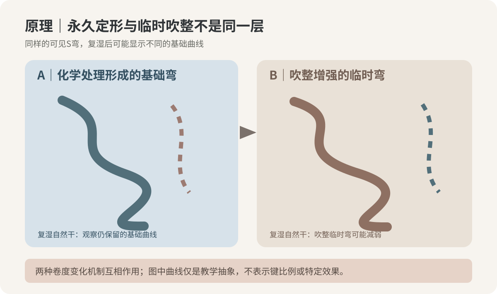
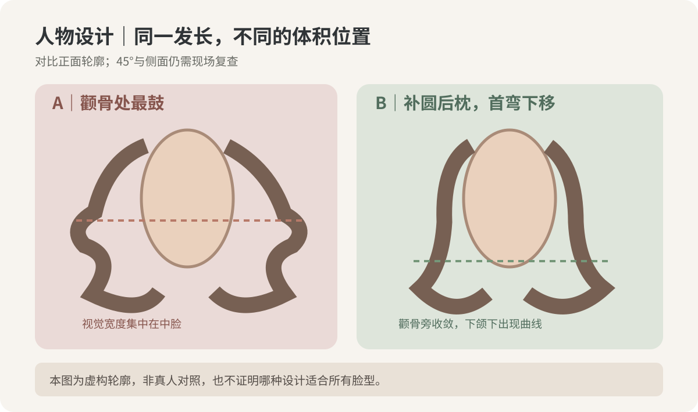
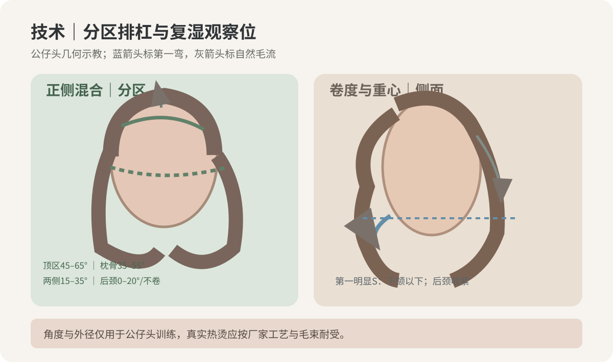

2026-10-21
【今日核心问题】一头中长发当天展示出松软的法式S，第一次正常洗发、自然干后弯度变弱，是二剂没有固定，还是造型吹整的临时弯消失了？
【新增判断能力】此前学习过冲水含水、二剂氧化和纸尾毛流；今天建立“受控复湿—自然干—标准吹整”的对照诊断，禁止只看沙龙刚吹好的照片就判定持久性。
一、毛发外层毛鳞片影响摩擦、梳理及吸水路径；决定伸长与弯曲响应的主要结构位于皮质层，含角蛋白中间丝与相关蛋白。二硫键是重要的共价交联；氢键、盐键/离子相互作用、疏水相互作用与毛发的含水状态共同决定黏弹性。它们不是独立的“卷度旋钮”。
二、水分进入毛发，竞争部分氢键并使角蛋白基质塑化，改变链段活动性与玻璃化相关行为；湿态更易变形。干燥时氢键网络重新组织，可能形成吹整带来的暂时弯度；再次复湿可改变这种暂时形状。不能把“吹干时很卷”当作可靠的二硫键定形证明。
三、化学烫发中，符合产品说明的还原体系（例如TGA类或厂家规定的其他体系）影响可接近的部分二硫键；卷杠及发片张力确定被约束的形状；水和热促进物理松弛并影响传热；干燥改变暂时性形状保持；配套氧化步骤参与部分共价交联恢复。最终持久性受纤维初始结构、化学历史、有效处理区、卷杠几何、温水张力与全过程兼容性共同影响，不能把某一步骤的异常直接归咎于二剂。
四、最容易混淆三类情况：①化学定形仍在，但沙龙吹整加强的C/S弧度被洗掉；②有效烫卷区不足、分区或进杠方向让自然干形状松；③原有漂染旧烫导致纤维机械恢复与表面状态下降。仅凭一张洗后照片，无法区分三者。发尾湿态异常拉长、黏软、易断时应停止追加还原和热处理。
五、研究中测量的玻璃化温度是受控材料实验数据，不能把“干发玻璃化温度”直接用作电棒或热烫机器设定值；门店所谓pH对应软化百分比也不是已测得的二硫键断裂率。

【检索范围】优先检查2026-10-14至2026-10-21新增研究，没有核验到直接针对“顾客洗一次头便松S”的门店随机对照试验。本课使用近期原创研究、机制综述与经典材料实测；来源1的2026年研究发表在所检索的7天范围之前，不能冒称本周新论文。
S1｜Qin等，《Achieving Highly Efficient Repeatable Hair Perming by Bunte Salt-Thiol Exchange Reaction》，ACS Omega，2026-09-15在线/09-29刊载，原始离体发束实验，DOI 10.1021/acsomega.6c05682。核心：研究对比一种实验性Bunte盐—硫醇交换方案与常规氧化烫发，使用多次重复处理、十次洗涤后的卷度维持、拉伸及显微测量。证据“中”：有受控毛束和仪器，但选定发束、实验配方与端点不等同真实顾客。能支持：洗后卷度保持值得独立评估，化学重复处理与机械性能需同时看。不能证明：任何现售门店产品可直接采用实验性SHB体系，或证明顾客某次掉卷都是二剂不足；不把论文的“烫发效率百分比”误读成二硫键断裂百分比。
S2｜Breakspear、Nöcker、Popescu，《Chemical bonds and hair behaviour—A review》，International Journal of Cosmetic Science，2024-05-11在线，2024年46卷，机制综述，DOI 10.1111/ics.12967。核心：角蛋白纤维的氢键、二硫键、离子和疏水相互作用贡献具有异质性。证据“中至强（机制综述）”：汇集不同测量方法，非本文模拟顾客临床对照。能支持：水分、化学历史和形变路径都需区分。不能证明：仅凭手感或洗发次数推断特定毛束的断键率或补药方案。
S3｜Wortmann、Stapels、Elliott、Chandra，《The effect of water on the glass transition of human hair》，Biopolymers，2005-12-15首次在线/2006-04-05期刊，原始DSC材料实验，DOI 10.1002/bip.20429。核心：毛发玻璃化行为随水分变化，水参与塑化。证据“中”：原始仪器实验清楚，但不能替代热烫人体试验。能支持：复湿—干燥可能改变临时形状。不能证明：安全烫发温度、一次洗后预期卷度或吹风温度设定。
【证据分层】上述属科研；本课分区、杠径和吹整步骤为门店示教候选；具体药剂、pH、加热时间与氧化条件必须遵循实际配套厂家技术说明并经现场毛束耐受验证。
【模拟教学案例｜人物与过程均虚构】32岁，脸型介于方圆与椭圆之间，颧骨外侧稍宽、下颌转折较清晰；头顶略尖、后枕偏扁、颈部略短、肩宽中等。风格希望自然、有松弛感但不显成熟。中长发在锁骨下约8厘米，原先低层次，下摆偏密，顶区发量中等偏少、发径细软；后枕密度较高且稍粗硬；右侧耳前有轻微向后毛流和自然内旋。
化学历史分区：新生约7厘米未染烫；中段约10厘米一年前染深棕；发尾3—5厘米有旧漂/旧烫史，湿态回弹明显较慢。每两天洗头一次、健身后常自然晾干，早晨最多愿意花5分钟吹头发。参考图为吹整后顶部轻C、脸周下颌以下进入自然大S、发尾有柔和聚拢、后枕圆；顾客说“不要太卷、显脸小、自己洗也差不多”。
【先诊断目标】把参考图拆为：顶区微支撑不拔高尖头；最大蓬松点移至耳后和枕骨上部；正面颧骨旁控制横向宽度；第一条明显S从下颌以下开始；后颈负空间更干净。最大风险：发尾旧漂段被强行烫进去，以及吹整增强的弯被误说成自然干也能完全保持。
【剪裁方案】保留锁骨下的底线密度，低到中低层次减轻下摆堆积；脸周层次顺下颌—锁骨转折衔接。避免将顶区过度打薄。若发尾试束显著失去弹性，建议优先修去风险段或明确不让该段参与再次化学处理，并与顾客重新协商保留长度。
【结构目标】顶区轻C、枕骨上部补圆、两侧下颌以下1.5—2个连续大弯、后颈收紧。上述圈数是公仔头几何示教候选，不是保证烫发卷度的处方；如果有效长度不足，应缩小弯度目标。
【还原体系与涂放】健康新生区只考虑产品标示适用细软发的配套还原体系；染后段独立测试，不默认与新生区同配方；旧漂旧烫发尾在耐受未确认时不参与处理。根—中—尾按实际产品说明和毛束安全边界分区涂放；不允许自行跨品牌混配还原剂、保护液和二剂。门店经验pH 7.5—8.0仅可作为本店历史造型烫候选比较，不是通用推荐，也绝非“软化60—70%”的实验断键结果。现场终点需由产品说明、发束可控恢复表现与断发风险联合决定，不使用“一拉几厘米=百分之多少”。
【冲水与卷入】按实际配套体系充分冲洗后，统一用吸水纸记录发片是持续滴水、均匀湿润还是异常黏软，不凭颜色判断含水率。发片厚度以能整片均匀贴杠为准，轻而均匀的张力避免根部折痕；发尾只卷入经确认耐受的有效长度。沿头部曲率与自然毛流确定方向，纸尾平顺，无折返。示教公仔头可先用外径约26—32毫米杠比较同一层次的第一弯；不同品牌杠号不直接按数字等同外径。
【热、干燥与氧化】设备温控、加热时间、干燥终点、热保护和二剂氧化完整执行所选体系与设备的兼容说明，记录设备实际状态、发片含水和顺序。本文不从模拟人物推导通用60℃/110℃/135℃或任意分钟配方。发现冒烟、刺激性不耐受、明显断丝或粘连等异常立即停止。不能用加二剂或加热补救自然干后的视觉落差。
【交付与复查】现场同时记录“自然落发近干”和“按标准轻吹”的两张照片，说明差异。顾客首次洗后不急于重烫：先看湿发弹性、自然干完整曲线、再用相同吹风方向复现；核对是否主要丢失吹整临时弯。预期是中段轻S、颧骨旁不过度鼓、后枕圆，日常可用低风险发根顺毛流吹干加手掌绕尾。若自然干大面积无形且可见永久弯明显不足，先复盘记录和毛束耐受，再决定任何后续服务；若只是吹整差异，调整居家手法而不是追加化学处理。
【把“卷度”翻译成比例】本案头顶略尖、后枕扁、颈略短，最值得调整的是横向蓬松分布与首弯高度，而不是全头卷径变小。
正面：顶部不无限增高；颧骨同高区域尽量不形成两侧最大鼓出。第一明显S从下颌以下开始，让面部中心保持干净，下摆在锁骨附近保留轻盈向内或顺流弯。若顾客反而是瘦长脸、窄肩与低发量，适度将最大横向体积上移也可能更协调，不能套唯一脸型标准。
45度：从颞部沿下颌至锁骨观察轮廓是否连贯，枕骨上部补圆的体积能否平滑下接后颈。分缝不同、习惯别耳不同，左右进杠可以不完全镜像，但视觉重量需平衡。
侧面：后枕最宽点可以略高于后颈，避免“上塌下鼓”；后颈留白帮助颈部看起来更清爽。层次多会减轻末端重量但也可能让细软发更透，层次少能保厚底线却容易使大S落点过低。两者不是绝对好坏，而是因人取舍。
最重要的观察：洗前吹整照很美，洗后自然干也可能更直；如果两张图的“第一弯位置”不同，先区分造型程序对轮廓的贡献，不把这种差异直接当化学失败。

【三张原创教学示意图】均由本期从零绘制的几何图与虚构轮廓构成，不是显微成像、真实顾客前后对比或临床效果证据。
图1（原理图）重点看：二硫键参与相对持久的化学定形，氢键与含水状态参与暂时形状；洗后变化不能只凭一处推断断键率。
图2（技术图）重点看：顶区、枕骨上部、两侧及后颈的提升方向和杠径候选；箭头显示自然毛流和第一弯，不是特定药剂的安全设置。
图3（人物美感图）重点看：颧骨两侧最大鼓出与后枕补圆、第一弯下移的视觉区别；比较正面、45度和侧面三个角度。
【公仔头无化学/无热演示候选：提升角以局部头皮切线0°计算】
顶区：目标自然C支撑，局部提升约45—65°、杠体实际外径约28—32毫米；沿自然分缝和生长方向选择落杠点，根部张力轻均匀。纠错：根部被夹出死折多先检查过度提升与杠体落点，而不是软化不足。
枕骨上部：目标把扁后脑补圆，提升约35—55°、约26—30毫米；顺头骨曲率将连续发片衔接到顶区，第一圈进入要柔顺，避免上下卷向冲突。
两侧：目标下颌以下自然S，约15—35°、约28—34毫米；沿左右实际毛流修正方向，颧骨水平不强造膨胀；最明显卷度在耳下至锁骨上方，不机械镜像。
后颈：目标收紧并留颈部负空间，约0—20°，可不卷；若为示教卷杠，应减少厚重堆积与过多圈数，先看层次和底线密度。
刘海/脸周：短而细软处优先保留自然垂落，约0—20°或不卷；避免拉扯碎发导致根部折点，必要时把第一弯向下移。
发片厚度按杠体可均匀贴合选择，张力以不牵拉损伤段为底线。示教圈数C弯通常更少，S弯需更长有效段；绝不能把“2圈=一定S弯”当通用规则。压根看落杠点、炸根看提升与发片、尾翘看纸尾及天然毛流、断层看圈数和进杠方向、后颈堆看重量和过度密集的卷发片。

【模拟门店咨询｜先问4个问题】
1.“你说不要太卷，是怕羊毛卷那样的小密度，还是连下颌下的大S也不想要？”
2.“参考图是吹整后拍的还是自然晾干？你愿意洗后花几分钟吹干发根与脸周？”
3.“这一年染、漂、烫过哪些位置？如果旧发尾不能安全卷入，能接受适当修剪吗？”
4.“你觉得头显大，是颧骨两边、后枕偏扁，还是肩颈处头发太厚？”
【示范对话】顾客：“我想洗完也跟今天吹好一样卷，不想每天折腾。” 发型师：“我们先分清化学烫出来的基础大S和吹整加强的弧线。我可以把第一弯设计在下颌下面、后脑做圆一点，但刚吹完与自然干不可能保证完全同一张图；发尾旧漂那段要先确认安全。” 顾客：“那洗一次就松，是烫坏了吗？” 发型师：“不能只凭一张洗后照片判定。我们会比较自然干和按同样方法轻吹的效果，再核对发质及操作记录，不会为了让它立刻更卷直接补药或加热。”
【可复制沟通话术】“这张参考图除了烫出的基础卷，还有吹整形成的临时弯。我会重点控制颧骨两侧宽度、后枕圆度和下颌以下第一弯，同时把旧漂发尾的安全放在前面。成品会给你看自然落发与轻吹两种状态，教你能做到的五分钟手法；持久性需要根据你自己的发质和洗护观察，不承诺洗后完全等同精修造型照。”
【先练，暂不看下方答案】模拟中长发同一区域两束离体毛发均来自同一配套处理的安全毛束，干发视觉状态如下：A束吹整后明显S，复湿自然干后仍留柔和S；B束吹整后也有S，但复湿自然干后仅有微C。两束未经独立检测，不能确认具体二硫键状态。
观察题：①哪束更可能包含较多“吹整临时弯”贡献？②能否因此认定B束二剂不足？③你会补拍哪三个对照状态？④要让这位细软中长发顾客显头小，第一弯和最大蓬松点怎样选择？
【参考答案】①B束在标准化复湿后失去更多可见曲线，提示其当日吹整贡献可能更大；但根数、长度、湿度、重量、方向和损伤也可能不同。②不能。二剂是否不足需要完整配套操作记录、现场安全评估及更严格的毛束证据；不可按结果倒推直接追加二剂。③补拍同背景、同分缝的自然落发干态、充分复湿后自然干态、标准轻吹后状态；记录水温、干燥时间和是否使用产品。④本案控制颧骨两侧横向鼓出，枕骨上部略补圆，第一明显S从下颌以下开始；同时保留后颈适当留白。若人物条件不同，应重新设定视觉重心。
【思考路径】人物比例目标→历史与耐受→定义可安全烫卷区→区分自然干基础卷与吹整临时弯→核对机械分区和配套化学历史→再沟通取舍。不要先用“二剂再上一次”充当诊断。
【今日最值得拿到店里验证的1件事】离体毛束单变量实验：无热卷筒约束是否改变第一次干发的弯度，以及这种差异在再次复湿后能否保留？
【目的】验证“已经烫好的毛束”即使不追加任何化学处理，也可能通过干燥时的几何约束产生暂时性视觉弯度。研究的唯一主动变量为“干燥过程中是否保持卷筒约束”。
【材料】同来源、同一先前安全工艺下已完成烫发的离体毛束10束（每组5束），等长等根数分样、30毫米塑料卷筒、夹具、统一水槽、软尺、带格背景板、手机固定支架、温湿度计；不准备药水、二剂、电热杠或高温工具。
【步骤】①从同批毛束随机分A/B组并编号，统一清水浸润、轻轻挤去表面水分。②A组保持自然悬垂风干，B组只在干燥过程中绕同外径30毫米卷筒，以不损伤的轻约束固定；不加热。③两组全部自然干且在同室温湿度静置后拍同距照片，记录第一弯高度、端点偏移和可见弯数。④相同位置悬挂24小时后再次记录。⑤两组统一清水复湿并全部改为相同悬垂自然干，再拍照片。异常断丝停止；实验不用顾客头发与高风险药剂。
【控制变量】来源、化学历史、毛束根数/长度、清水温度、浸润时间、干燥环境与记录角度一致；只有步骤②是否受卷筒形状约束不同。不额外加造型品，也不把湿发拉伸成不可比的张力。
【记录表字段】样本号｜A自然干/B卷筒干｜初始长｜初次干态首弯高度｜初次干态端点偏移｜24小时偏移｜复湿再自然干首弯/偏移｜断丝｜备注。数据留空待实施。
【如何转成门店标准】如果两组在初次干态形态有差异，但再复湿自然干差异减小，下一步培训要学会向顾客区分“基础烫卷”和“造型临时弯”；若无明显差异，也照实记录，不强推结论。这只检验本批样本和条件，无法判定二剂还原率或任何顾客实际洗后持久率。
【1个原理】水分、干燥和氢键重排能使吹整弯度随复湿发生变化，不能把当天吹整照全部归功于永久化学定形。
【1个错误】顾客首次洗后自然干比沙龙吹整松，就不核对对照条件，直接断言二剂不足并加药。
【下次观察】同一位顾客拍三种状态：自然干、标准轻吹、再次洗后自然干；先判断哪一段曲线真正稳定。